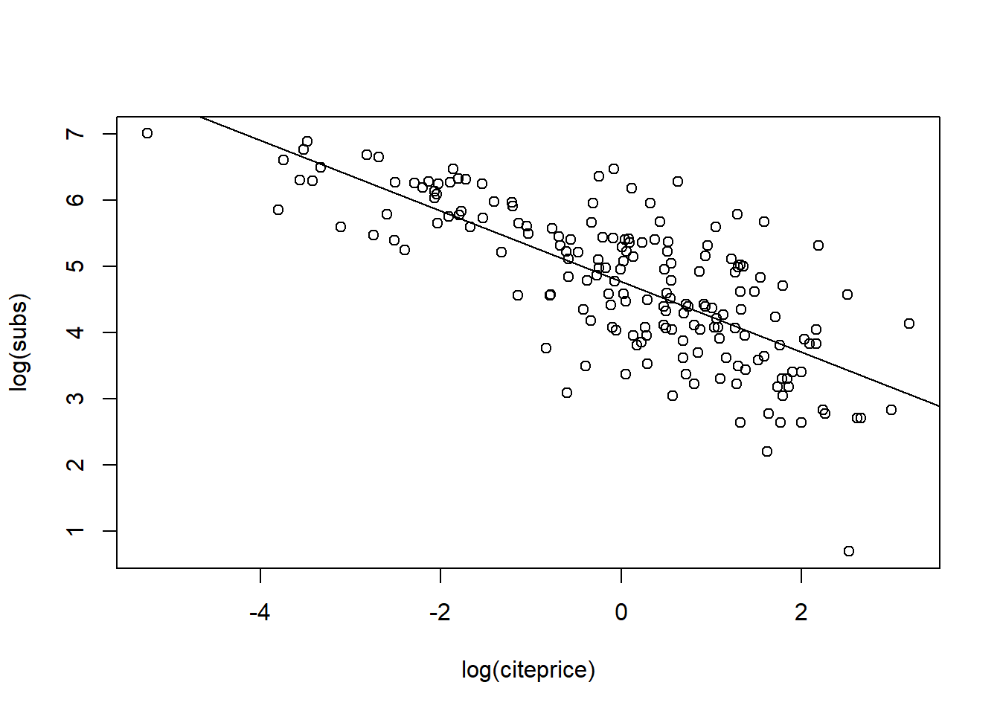
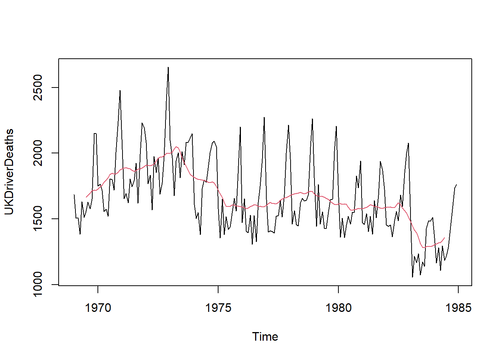
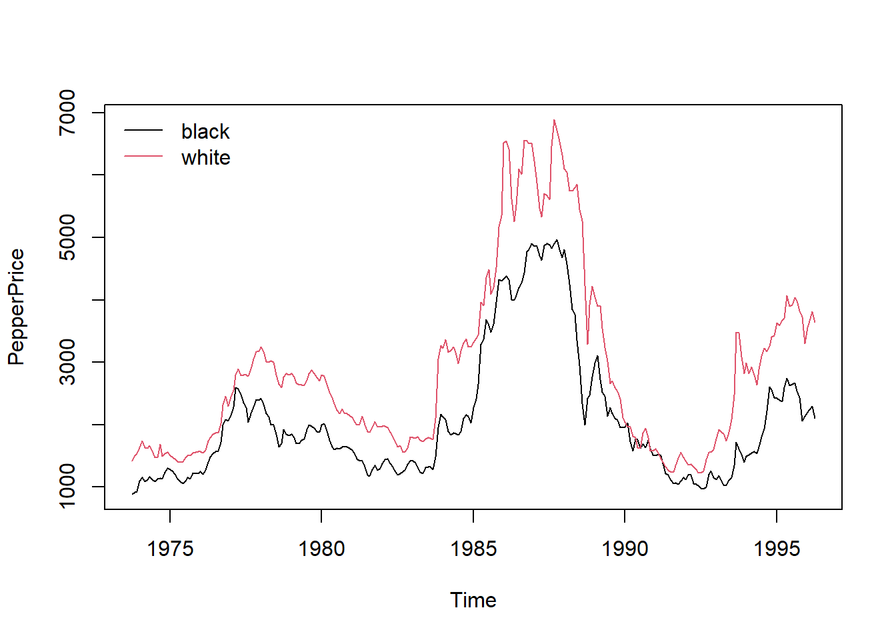
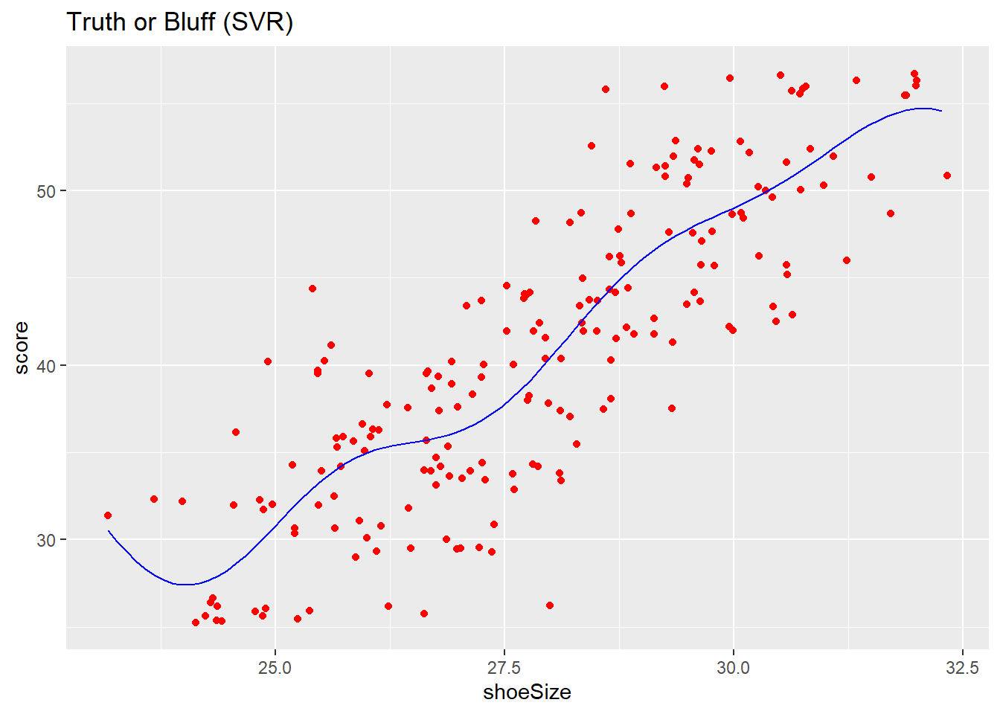
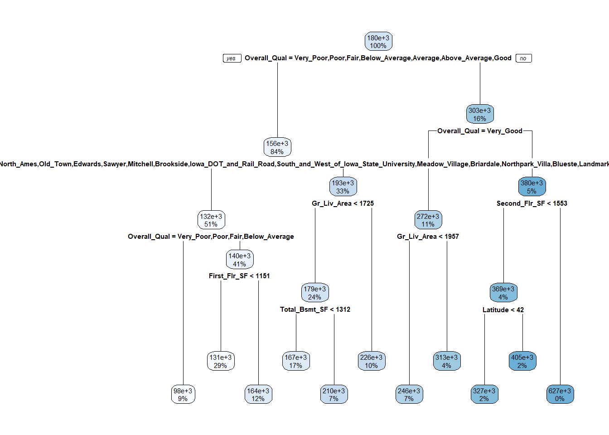
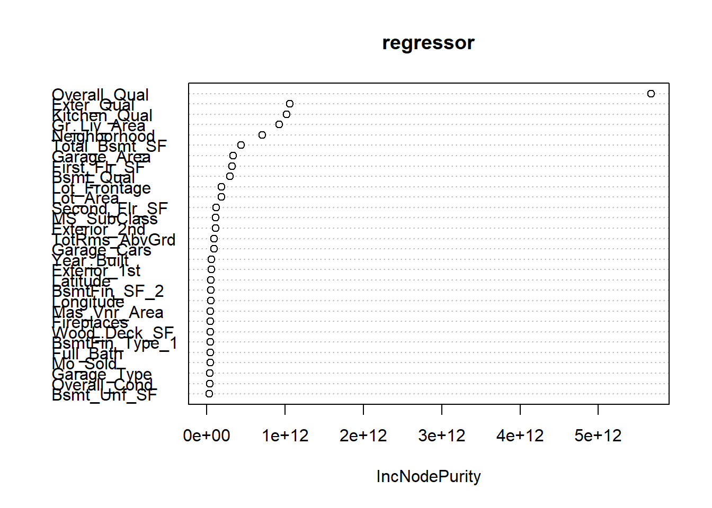

Quantitative Analysis
Pour chaque algorithm, dire d’abord si il est paramétrique ou pas. Si il est flexible ou interprêtable (voir figure 2.7 https://faculty.marshall.usc.edu/gareth-james/ISL/ISLR%20Seventh%20Printing.pdf)
Linear Regression
Simple Linear Regression
Data set from Stock & Watson (2007), originally collected by T. Bergstrom, on subscriptions to 180 economics journals at US libraries, for the year 2000. Bergstrom (2001) argues that commercial publishers are charging excessive prices for academic journals and also suggests ways that economists can deal with this problem. See http://www.econ.ucsb.edu/~tedb/Journals/jpricing.html
Description
data("Journals", package = "AER")
journals <- Journals[, c("subs", "price")]
journals$citeprice <- Journals$price/Journals$citations
summary(journals)## subs price citeprice
## Min. : 2.0 Min. : 20.0 Min. : 0.005223
## 1st Qu.: 52.0 1st Qu.: 134.5 1st Qu.: 0.464495
## Median : 122.5 Median : 282.0 Median : 1.320513
## Mean : 196.9 Mean : 417.7 Mean : 2.548455
## 3rd Qu.: 268.2 3rd Qu.: 540.8 3rd Qu.: 3.440171
## Max. :1098.0 Max. :2120.0 Max. :24.459459Estimation
The author wants to estimate the effect of the price per citation on the number of library subscriptions.
plot(log(subs) ~ log(citeprice), data = journals)
jour_lm <- lm(log(subs) ~ log(citeprice), data = journals)
abline(jour_lm)
Once the model is fitted, we can inspect the value of \(log(citeprice)\).
summary(jour_lm)##
## Call:
## lm(formula = log(subs) ~ log(citeprice), data = journals)
##
## Residuals:
## Min 1Q Median 3Q Max
## -2.72478 -0.53609 0.03721 0.46619 1.84808
##
## Coefficients:
## Estimate Std. Error t value Pr(>|t|)
## (Intercept) 4.76621 0.05591 85.25 <2e-16 ***
## log(citeprice) -0.53305 0.03561 -14.97 <2e-16 ***
## ---
## Signif. codes: 0 '***' 0.001 '**' 0.01 '*' 0.05 '.' 0.1 ' ' 1
##
## Residual standard error: 0.7497 on 178 degrees of freedom
## Multiple R-squared: 0.5573, Adjusted R-squared: 0.5548
## F-statistic: 224 on 1 and 178 DF, p-value: < 2.2e-16Prediction
And finally prediction
lciteprice <- seq(from = -6, to = 4, by = 0.25)
jour_pred <- predict(jour_lm, interval = "prediction",
newdata = data.frame(citeprice = exp(lciteprice)))
plot(log(subs) ~ log(citeprice), data = journals)
lines(jour_pred[, 1] ~ lciteprice, col = 1)
lines(jour_pred[, 2] ~ lciteprice, col = 1, lty = 2)
lines(jour_pred[, 3] ~ lciteprice, col = 1, lty = 2)
Multiple Linear Regression
Bierens and Ginther (Empirical Economics 2001) analyze determinants of wages. The US Census Bureau collected 28155 observations. We have a cross-section data on males aged 18 to 70 with positive annual income greater than US$ 50 in 1992 who are not self-employed or working without pay. Finally wages are deflated by the deflator of personal consumption expenditures for 1992.
Description
data("CPS1988", package = "AER")
summary(CPS1988)## wage education experience ethnicity smsa
## Min. : 50.05 Min. : 0.00 Min. :-4.0 cauc:25923 no : 7223
## 1st Qu.: 308.64 1st Qu.:12.00 1st Qu.: 8.0 afam: 2232 yes:20932
## Median : 522.32 Median :12.00 Median :16.0
## Mean : 603.73 Mean :13.07 Mean :18.2
## 3rd Qu.: 783.48 3rd Qu.:15.00 3rd Qu.:27.0
## Max. :18777.20 Max. :18.00 Max. :63.0
## region parttime
## northeast:6441 no :25631
## midwest :6863 yes: 2524
## south :8760
## west :6091
##
## Estimation
cps_lm <- lm(log(wage) ~ experience + I(experience^2) + education + ethnicity, data = CPS1988)
summary(cps_lm)##
## Call:
## lm(formula = log(wage) ~ experience + I(experience^2) + education +
## ethnicity, data = CPS1988)
##
## Residuals:
## Min 1Q Median 3Q Max
## -2.9428 -0.3162 0.0580 0.3756 4.3830
##
## Coefficients:
## Estimate Std. Error t value Pr(>|t|)
## (Intercept) 4.321e+00 1.917e-02 225.38 <2e-16 ***
## experience 7.747e-02 8.800e-04 88.03 <2e-16 ***
## I(experience^2) -1.316e-03 1.899e-05 -69.31 <2e-16 ***
## education 8.567e-02 1.272e-03 67.34 <2e-16 ***
## ethnicityafam -2.434e-01 1.292e-02 -18.84 <2e-16 ***
## ---
## Signif. codes: 0 '***' 0.001 '**' 0.01 '*' 0.05 '.' 0.1 ' ' 1
##
## Residual standard error: 0.5839 on 28150 degrees of freedom
## Multiple R-squared: 0.3347, Adjusted R-squared: 0.3346
## F-statistic: 3541 on 4 and 28150 DF, p-value: < 2.2e-16Comparaison of two models : significativity of one variable with the Wald Test
Is there a difference in the average log-wage (controlling for experience and education) between Caucasian and African-American men? We want to test the relevance of the variable ethnicity is the regression.
The Wald test works by testing the null hypothesis that a set of parameters is equal to some value. In the model being tested here, the null hypothesis is that the two coefficients of interest are simultaneously equal to zero. If the test fails to reject the null hypothesis, this suggests that removing the variables from the model will not substantially harm the fit of that model, since a predictor with a coefficient that is very small relative to its standard error is generally not doing much to help predict the dependent variable.
library(lmtest)
waldtest(cps_lm, . ~ . - ethnicity)## Wald test
##
## Model 1: log(wage) ~ experience + I(experience^2) + education + ethnicity
## Model 2: log(wage) ~ experience + I(experience^2) + education
## Res.Df Df F Pr(>F)
## 1 28150
## 2 28151 -1 354.91 < 2.2e-16 ***
## ---
## Signif. codes: 0 '***' 0.001 '**' 0.01 '*' 0.05 '.' 0.1 ' ' 1The p-value is less than the generally used criterion of 0.05 , so we are able to reject the null hypothesis, indicating that the coefficients are not equal. Because including statistically significant predictors should lead to better prediction (i.e., better model fit) we can conclude that including ethnicity results in a statistically significant improvement in the fit of the model.
Linear Regression with Time series Data
Infrastructure and “Naive” Methods
Standard time series class in R is “ts” and aimed at regulat series such as annual, quaterly, monthly.
We take the example of the quaterly consumption of non-durables in the United Kingdom (Franses 1998)
library(AER)
data("UKNonDurables")Dygraphs provides rich facilities for charting time-series data in R and includes support for many interactive features including series/point highlighting, zooming, and panning.
library(dygraphs)
dygraph(UKNonDurables, main = "quaterly consumption of non-durables in the UK") %>%
dyRangeSelector(dateWindow = c("1955-01-01", "1988-12-01"))If you deal with irregular series, you might need to use other package such as the zoo Generalization of “ts”: time stamps of arbitrary type. Numeric vectors or matrices, “index” attribute contains vector of time stamps (not just “tsp” attribute!). Regular series can be coerced back and forth between “ts” and “zoo” via as.zoo() and as.ts(). “zoo” more convenient for daily data (e.g., “Date” time stamps) or intraday data (e.g., “POSIXct” or “chron” time stamps). More details: Zeileis and Grothendieck (JSS 2005).
Linear filtering
Finite moving averages is the most important one. You can implemente it with the filter() function in R. Applied to the UKDriverDeaths database (Harvey and Durbin, JRSS A 1986), we obtain the following.
data("UKDriverDeaths")
plot(UKDriverDeaths)
lines(filter(UKDriverDeaths, c(1/2, rep(1, 11), 1/2)/12),
col = 2)
Decomposition into seasonal, trend and irregular components
In R, decompose() takes simple symmetric filter for extracting trend,derives seasonal component by averaging trend-adjusted observations from corresponding periods. stl() iteratively finds seasonal and trend components by loess smoothing in moving data windows.
dd_dec <- decompose(log(UKDriverDeaths))
dd_stl <- stl(log(UKDriverDeaths), s.window = 13)Stationarity, unit roots, and cointegration test
Many time series in macroeconomics and finance are nonstationary.With use the example from Franses 1998 which is a bivariate time series of average monthly European spot prices for black and white pepper (in US dollars per ton).
data("PepperPrice")
plot(PepperPrice, plot.type = "single", col = 1:2)
legend("topleft", c("black", "white"), bty = "n",
col = 1:2, lty = rep(1,2))
Unit-root test
The augmented Dickey-Fuller (ADF) test can be done as follow :
library(tseries)## Registered S3 method overwritten by 'quantmod':
## method from
## as.zoo.data.frame zooadf.test(log(PepperPrice[,"white"]))##
## Augmented Dickey-Fuller Test
##
## data: log(PepperPrice[, "white"])
## Dickey-Fuller = -1.744, Lag order = 6, p-value = 0.6838
## alternative hypothesis: stationarystationarity test
Kwiatkowski, Phillips, Schmidt and Shin (J. Econometrics 1992) create a test with two variants, one with a level stationnarity and the other one with a tredn stationnarity.
library(tseries)
kpss.test(log(PepperPrice[,"white"]))##
## KPSS Test for Level Stationarity
##
## data: log(PepperPrice[, "white"])
## KPSS Level = 0.61733, Truncation lag parameter = 5, p-value = 0.02106cointegration test
Engle-Granger two-step method Available in po.test() from tseries (named after Phillips and Ouliaris, Econometrica 1990).
po.test(log(PepperPrice))##
## Phillips-Ouliaris Cointegration Test
##
## data: log(PepperPrice)
## Phillips-Ouliaris demeaned = -24.099, Truncation lag parameter = 2,
## p-value = 0.02404if the p-value is lower thant 5%, it suggests that both series are cointegrated.
Diagnostics
We give code here to validate the linear regression models. We will cover ; i) regression diagnostics: Comparison of statistics for full data set and for data with single observations deleted ; ii) diagnostic tests: Test for heteroskedasticity, autocorrelation, and misspecification of the functional form, etc ; iii) Robust covariances: Covariance estimators that are consistent for a wide class of disturbance structures.
We will also give hints for alternative methods of regression : regression techniques that are robust to outliers and unusual observations and model quantiles of the conditional distribution of a variable.
Finally we show how to implement Instrumental Variables (IV) in the case of endogenous regressors.
Regression diagnostics
Find points that are not fitted as well as they should be or have undue influence on the fitting of the model. We use the paper of Besley, Kuh adn Welsch (1980) based on deletion of observations. PublicSchools data provide per capita Expenditure on public schools and per capita Income by state for the 50 states of the USA plus Washington, DC., for 1979.
data("PublicSchools", package = "sandwich")
summary(PublicSchools)## Expenditure Income
## Min. :259.0 Min. : 5736
## 1st Qu.:315.2 1st Qu.: 6670
## Median :354.0 Median : 7597
## Mean :373.3 Mean : 7608
## 3rd Qu.:426.2 3rd Qu.: 8286
## Max. :821.0 Max. :10851
## NA's :1Scatterplot with fitted linear model and three highlighted observations.We omit incomplete observations (Wisconsin) and scale income to be in 10,000 USD.
ps <- na.omit(PublicSchools)
ps$Income <- ps$Income / 10000
plot(Expenditure ~ Income, data = ps, ylim = c(230, 830))
ps_lm <- lm(Expenditure ~ Income, data = ps)
abline(ps_lm)
id <- c(2, 24, 48)
text(ps[id, 2:1], rownames(ps)[id], pos = 1, xpd = TRUE)
If you are familiar with outlier caracterization, use the following command
plot(ps_lm,which=1:6)Alaska stands out in all plots, it has ; which = 1) a large residual ; which = 2) Upper tail of empirical distribution of residuals ; which = 3 ) Casts doubt on the assumption of homogeneous variances ; which = 4 and 6) Corresponds to an extraordinarily large Cook’s distance ; which = 5 and 6) Has the highest leverage. Deleting this observation might be an option.
Diagnostic Tests
We test here for heteroskedasticity in cross-section regressions or disturbance autocorrelation in time series regressions.
We can reconsider Journals data as an example for cross-section regressions.
data("Journals", package = "AER")
journals <- Journals[, c("subs", "price")]
journals$citeprice <- Journals$price/Journals$citations
journals$age <- 2000 - Journals$foundingyear
jour_lm <- lm(log(subs) ~ log(citeprice), data = journals)Testing for heteroskedasticity
With the Breusch-Pagan test
bptest(jour_lm)##
## studentized Breusch-Pagan test
##
## data: jour_lm
## BP = 9.803, df = 1, p-value = 0.001742or with the White test
bptest(jour_lm, ~ log(citeprice) + I(log(citeprice)^2),
data = journals)##
## studentized Breusch-Pagan test
##
## data: jour_lm
## BP = 10.912, df = 2, p-value = 0.004271f the p-value is below 5%, we reject the null hypothesis of homoskedasticity and conclude that there is heteroskedasticity.
Testing the functional form
The assumption is make that \((ε|X) = 0\) and is crucial for consistency of the least-squares estimator. Misspecification of the functional form, for example by omitting relevant variables, is a source of violation. The following command test if the specification is ok :
resettest(jour_lm)##
## RESET test
##
## data: jour_lm
## RESET = 1.4409, df1 = 2, df2 = 176, p-value = 0.2395if the p-value is lower than 5%, we reject the nul hypothesis that the functional form of the model is well specified. Here this is not the case.
Testing for autocorrelation
Time series regressions are often affected by autocorrelation (or serial correlation), just as disturbances in cross-section models are typically heteroskedastic.
Let us consider the model for US consumption function.
library("dynlm")
data("USMacroG", package = "AER")
consump1 <- dynlm(consumption ~ dpi + L(dpi), data = USMacroG)A classical test for autocorrelation is the Durbin-Watson. Dwtest() implements an exact procedure for computing the p value (for Gaussian data) and also provides a normal approximation for sufficiently large samples (both depending on the regressor matrix X).
dwtest(consump1)##
## Durbin-Watson test
##
## data: consump1
## DW = 0.086636, p-value < 2.2e-16
## alternative hypothesis: true autocorrelation is greater than 0the null hypothesis of no autocorrealation is here for example rejected.
Robust Standard Errors and Tests
As seen previously, in the presence of autocorrelation and/or heteroskedasticity, the covariance structure need to be adjusted. More often than not, form of the autocorrelation or heteroskedasticity is unknown. In R, vcovHC() computes all versions of covariance estimators from a fitted linear model.
vcovHC(jour_lm)## (Intercept) log(citeprice)
## (Intercept) 0.003085261 0.000693040
## log(citeprice) 0.000693040 0.001188432Support Vector Regression (SVR)
We use the reading skills database from the party package
library(party)
print(head(readingSkills))## nativeSpeaker age shoeSize score
## 1 yes 5 24.83189 32.29385
## 2 yes 6 25.95238 36.63105
## 3 no 11 30.42170 49.60593
## 4 yes 7 28.66450 40.28456
## 5 yes 11 31.88207 55.46085
## 6 yes 10 30.07843 52.83124Fitting SVR to the dataset
library(e1071)
regressor = svm(formula = score ~ shoeSize,
data = readingSkills,
type = 'eps-regression',
kernel = 'radial')Predicting a new result
y_pred = predict(regressor, data.frame(shoeSize = 26))Visualising the SVR results
library(ggplot2)
x_grid = seq(min(readingSkills$shoeSize), max(readingSkills$shoeSize), 0.1)
ggplot() +
geom_point(aes(x = readingSkills$shoeSize, y = readingSkills$score),
colour = 'red') +
geom_line(aes(x = x_grid, y = predict(regressor, newdata = data.frame(shoeSize = x_grid))),
colour = 'blue') +
ggtitle('Truth or Bluff (SVR)') +
xlab('shoeSize') +
ylab('score')
Decision Tree regression
Ames Housing data
To illustrate various regularization concepts we will use the Ames Housing data that has been included in the AmesHousing package.
library(AmesHousing)
library(rsample)
ames_split <- initial_split(AmesHousing::make_ames(), prop = .7)
ames_train <- training(ames_split)
ames_test <- testing(ames_split)
print(head(ames_train))## # A tibble: 6 x 81
## MS_SubClass MS_Zoning Lot_Frontage Lot_Area Street Alley Lot_Shape
## <fct> <fct> <dbl> <int> <fct> <fct> <fct>
## 1 One_Story_~ Resident~ 81 14267 Pave No_A~ Slightly~
## 2 One_Story_~ Resident~ 93 11160 Pave No_A~ Regular
## 3 Two_Story_~ Resident~ 78 9978 Pave No_A~ Slightly~
## 4 One_Story_~ Resident~ 41 4920 Pave No_A~ Regular
## 5 One_Story_~ Resident~ 43 5005 Pave No_A~ Slightly~
## 6 Two_Story_~ Resident~ 60 7500 Pave No_A~ Regular
## # ... with 74 more variables: Land_Contour <fct>, Utilities <fct>,
## # Lot_Config <fct>, Land_Slope <fct>, Neighborhood <fct>, Condition_1 <fct>,
## # Condition_2 <fct>, Bldg_Type <fct>, House_Style <fct>, Overall_Qual <fct>,
## # Overall_Cond <fct>, Year_Built <int>, Year_Remod_Add <int>,
## # Roof_Style <fct>, Roof_Matl <fct>, Exterior_1st <fct>, Exterior_2nd <fct>,
## # Mas_Vnr_Type <fct>, Mas_Vnr_Area <dbl>, Exter_Qual <fct>, Exter_Cond <fct>,
## # Foundation <fct>, Bsmt_Qual <fct>, Bsmt_Cond <fct>, Bsmt_Exposure <fct>,
## # BsmtFin_Type_1 <fct>, BsmtFin_SF_1 <dbl>, BsmtFin_Type_2 <fct>,
## # BsmtFin_SF_2 <dbl>, Bsmt_Unf_SF <dbl>, Total_Bsmt_SF <dbl>, Heating <fct>,
## # Heating_QC <fct>, Central_Air <fct>, Electrical <fct>, First_Flr_SF <int>,
## # Second_Flr_SF <int>, Low_Qual_Fin_SF <int>, Gr_Liv_Area <int>,
## # Bsmt_Full_Bath <dbl>, Bsmt_Half_Bath <dbl>, Full_Bath <int>,
## # Half_Bath <int>, Bedroom_AbvGr <int>, Kitchen_AbvGr <int>,
## # Kitchen_Qual <fct>, TotRms_AbvGrd <int>, Functional <fct>,
## # Fireplaces <int>, Fireplace_Qu <fct>, Garage_Type <fct>,
## # Garage_Finish <fct>, Garage_Cars <dbl>, Garage_Area <dbl>,
## # Garage_Qual <fct>, Garage_Cond <fct>, Paved_Drive <fct>,
## # Wood_Deck_SF <int>, Open_Porch_SF <int>, Enclosed_Porch <int>,
## # Three_season_porch <int>, Screen_Porch <int>, Pool_Area <int>,
## # Pool_QC <fct>, Fence <fct>, Misc_Feature <fct>, Misc_Val <int>,
## # Mo_Sold <int>, Year_Sold <int>, Sale_Type <fct>, Sale_Condition <fct>,
## # Sale_Price <int>, Longitude <dbl>, Latitude <dbl>Fitting Decision Tree Regression to the dataset
library(rpart)
regressor = rpart(formula = Sale_Price ~ .,
data = ames_train,
method = "anova",
control = rpart.control(minsplit = 1,minbucket = 1))Plot of the Graph
We can visualize our model with rpart.plot. rpart.plot has many plotting options, which we’ll leave to the reader to explore. However, in the default print it will show the percentage of data that fall to that node and the average sales price for that branch.
library(rattle)
library(rpart.plot)
library(RColorBrewer)
rpart.plot(regressor)
Random Forest Regression
Ames Housing data
To illustrate various regularization concepts we will use the Ames Housing data that has been included in the AmesHousing package.
library(AmesHousing)
library(rsample)
ames_split <- initial_split(AmesHousing::make_ames(), prop = .7)
ames_train <- training(ames_split)
ames_test <- testing(ames_split)##Train the model
library(randomForest)
regressor = randomForest(Sale_Price ~.,
data = ames_train,
ntree = 5)
print(regressor)##
## Call:
## randomForest(formula = Sale_Price ~ ., data = ames_train, ntree = 5)
## Type of random forest: regression
## Number of trees: 5
## No. of variables tried at each split: 26
##
## Mean of squared residuals: 1206395912
## % Var explained: 81.21Test of the model
pred_1 = predict(regressor,ames_test)Variable Importance
varImpPlot(regressor)